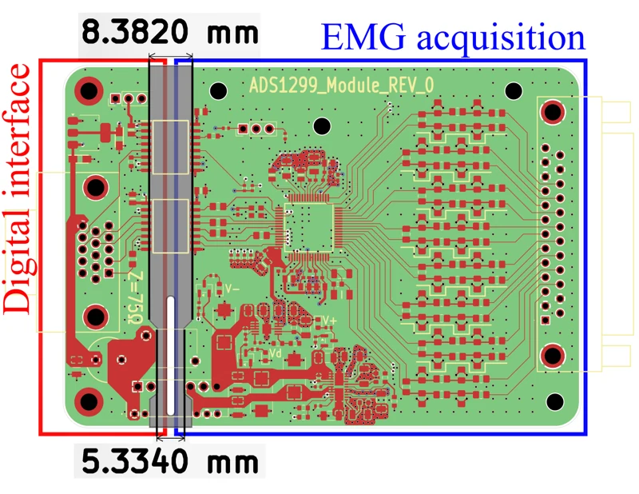
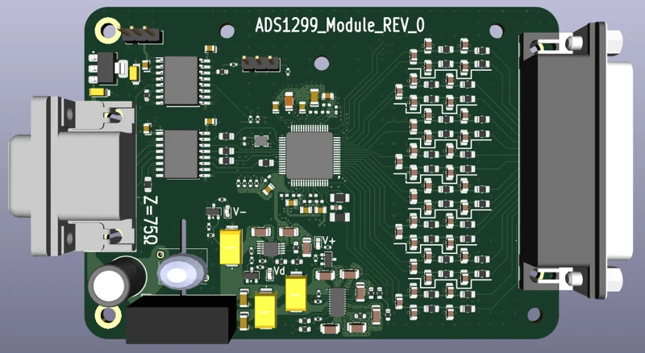

BIOMEDICAL / EMBEDDED
EMG acquisition board
An isolated, eight-channel acquisition system for diaphragmatic EMG, developed for preclinical respiratory research.

Project overview
I designed the acquisition PCB and embedded data path for electromyography (EMG).
This work formed part of my master’s thesis at TechRes Lab, Politecnico di Milano, in collaboration with the University of Utah. My contribution connects the analog front end, PCB isolation architecture, STM32 firmware, and synchronized experimental recordings.
System & specifications
| Acquisition | 8 simultaneous channels · ADS1299 integrated PGA and 24-bit ADC architecture |
|---|---|
| PCB | 4 layers · KiCad |
| Power domains | Galvanically isolated acquisition and digital interface domains |
| Electrodes | DB25 connector for electrode breakout |
| Host interface | DB15 connector for power and digital signals |
| Firmware host | STM32 NUCLEO-F756 · C · SPI acquisition and UART streaming |
*ADC resolution describes the component architecture, rather than a measured effective resolution of the complete system.
Hardware & PCB
The ADS1299 integrates programmable gain and simultaneous conversion, reducing the number of separate analog stages. Passive input filtering and protection sit close to the electrode connector.
Digital isolators and an isolated DC/DC converter separate the acquisition domain from the host. An LT3097 regulator provides low-noise bipolar analog rails. Copper keep-outs and a routed slot define the physical isolation boundary on the four-layer PCB.
I compared front-end filtering options in TINA-TI, balancing common-mode rejection, in-band response, and attenuation of high-frequency interference. These simulations informed the design; they are distinct from measured board performance.
Firmware & data flow
An ADS1299 data-ready interrupt starts SPI reception. A three-frame ring buffer decouples incoming samples from processing, and completed transfers are decoded from signed 24-bit values into the channel buffer.
The superloop builds framed UART messages with channel identifiers and error checks. Queued transmission and retry handling feed both the laptop logging path and the ventilator interface, allowing EMG and pneumatic data to be recorded together.
From layout to assembled board




Select an image to enlarge it.
Interactive 3D model
Inspect the board from every angle.
Load the supplied EMG acquisition assembly to inspect component placement, isolation spacing, and connectors.
Converted from the supplied STEP assembly for browser viewing. This CAD view documents the designed assembly; use the photographs for the fabricated board.
Documentation & CAD
The companion ventilator controller page describes the board that this module is connected to.